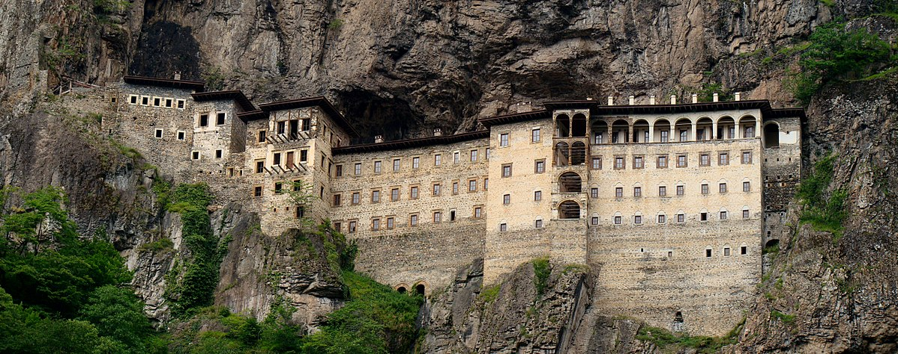
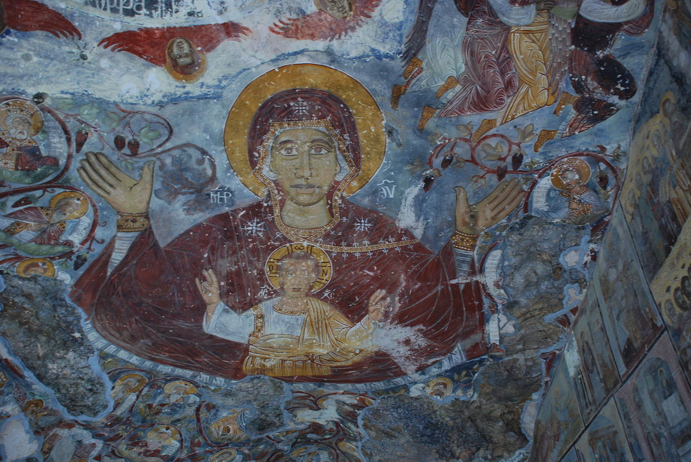
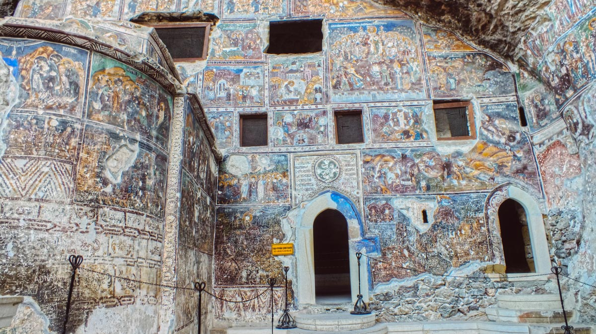

SÜMELA MANASTIRI
Sümela Manastırı, Trabzon ili, Maçka ilçesi, Altındere vadisi sınırları içerisinde yer alan (Antik Yunanca adı: Panagia) deresinin batı yamaçlarında Kara (Antik Yunanca adı: Mela) tepesi üzerinde deniz seviyesinden 1.150 m yükseklikteki eski Rum Ortodoks manastır ve kilise kompleksi olup, tam adı Panagia Sumela (Παναγία Σουμελά) veya Theotokos Sumela'dır.
TARİHÇESİ
Kilisenin MS 365-395 tarihleri arasında inşa edildiği sanılmaktadır. Anadolu'da sıkça rastlanılan Kapadokya kiliseleri tarzında yapılmıştır; hatta Trabzon'da Maşatlık mevkiinde benzeri bir mağara kilisesi daha vardır. Kilisenin ilk kuruluşu ile manastır haline dönüşümü arasındaki bin yıllık dönem hakkında fazla bir şey bilinmemektedir. Karadeniz Rumları arasında anlatılan bir efsaneye göre Atina'lı Barnabas ile Sophronios adlı iki keşiş aynı rüyayı görmüşler; rüyalarında, İsa’nın öğrencilerinden Aziz Luka’ın yaptığı üç Panagia ikonundan, Meryem'in bebek İsa’yı kollarında tuttuğu ikonun bulunduğu yer olarak Sümela'nın yerini görmüşler. Bunun üzerine birbirlerinden habersiz olarak deniz yoluyla Trabzon'a gelmiş, orada karşılaşıp gördükleri rüyaları birbirlerine anlatmış ve ilk kilisenin temelini atmışlardır. Bununla birlikte manastırdaki fresklerde sıkça yer alıp, özel bir önem verilen Trabzon İmparatoru III. Aleksios'un (1349-1390) manastırın gerçek kurucusu olduğu sanılmaktadır.
14. yüzyılda Türkmen akınlarına maruz kalan kentin savunmasında ileri karakol görevi üstlenen manastırın statüsünde Osmanlı fethinden sonra bir değişiklik olmamıştır. Yavuz Sultan Selim'in Trabzon’daki şehzadeliği sırasında buraya iki büyük şamdan hediye ettiği bilinmektedir. Fatih Sultan Mehmed, II. Murat, I. Selim, II. Selim, III. Murad, İbrahim, IV. Mehmed, II. Süleyman ve III. Ahmed'in de manastırla ilgili birer fermanları bulunmaktadır. Osmanlı döneminde manastıra sağlanan imtiyazlar, Trabzon ve Gümüşhane bölgesinin İslamlaşması sırasında özellikle Maçka ve kuzey Gümüşhane'de Hıristiyan ve gizli Hristiyan köyleri ile çevrili bir alan oluşturmuştur.
18 Nisan 1916’dan 24 Şubat 1918’e kadar süren Rus işgali sırasında Maçka civarındaki diğer manastırlar gibi bağımsız bir Pontus devleti kurmak isteyen Rum milislerin karargahı olmuş, nüfus mübadelesi ile bölgedeki Hristiyanların Yunanistan'a gönderilmesinin ardından önemini yitirerek T.C. Kültür Bakanlığı tarafından yakın zamanda onarılana dek kaderine terk edilmiştir.
Yunanistan'a mübadele ile göçen Karadenizli Rumlar Veria kentinde Sümela adını verdikleri yeni bir kilise inşa etmişlerdir. Her yıl Ağustos ayında tıpkı geçmişte Trabzon Sümela'da yaptıkları gibi yeni manastırın çevresinde geniş katılımlı şenlikler düzenlemektedirler.
2010 yılında Türkiye Cumhuriyeti Hükûmeti'nin izni ile Hristiyanlarca Meryem Ana'nın göğe yükseliş günü olarak kabul edilen ve kutsal sayılan 15 Ağustos günü 88 yıl aradan sonra ilk ayin düzenlenmiş, ayini Fener Rum Patriği Dimitri Bartholomeos yönetmiştir.


Önemi

Trabzon’un Maçka İlçesi’nde, Altındere Vadisi’ndeki Karadağ’ın yamacında sarp bir kayalığa, denizden 1150, vadiden 300 metre yüksekte inşa edilmiş olan Sümela Manastırı, bir Rum Ortodoks manastırı.
Bizans İmparatoru zamanında, keşiş yetiştiren, bölgenin en önemli okulu olagelmiş. Ayrıca burada bulunan ve havari Aziz Lukas’ın yaptığı kabul edilen ikonalardan birinin mucize gerçekleştirdiğine, ayazmalarından birinin de şifalı olduğuna inanılıyormuş.
Hristiyanlar İçin Bir Hac Noktası
Rivayete göre, Meryem Ana, Sümela Manastırı’nı yaptıran rahipler Barnabas ve Sophronios’un rüyasına girer. Bugün Sümela Manastırı’nın içine yapıldığı mağarada Aziz Lukas’ın yaptığı ve melekler tarafından getirilmiş bir ikona olduğunu söyler. Biri İstanbul’da, diğeri Atina’da yaşayan iki keşiş de birbirlerinden habersiz bir şekilde Trabzon’a gelir ve mağarada ikonayı bulur. Böylece bu mağaranın girişine duvar örerek burayı bir kilise haline getirirler. Bu nedenle burası Hristiyanlar için kutsal sayılan hac noktalarından biri haline geliştir.
Rivayetler